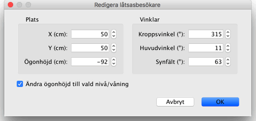
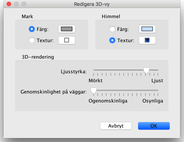

| Ändra 3D-vy | |||
Välj menyn 3D-vy > Vy ovanifrån eller 3D-vy > Låtsasbesökare för att växla mellan de två synvinklarna som visas i 3D-vyn.
När Vy ovanifrån är valt visar 3D-vyn ditt hem i tre dimensioner sett från en synvinkel ovanifrån.
I detta läge vrider du hemmet runt en vertikal axel genom att hålla ner vänster musknapp och dra musen till vänster eller höger, runt en horisontell axel när du drar upp och ner. Du zoomar in och ut i 3D-vyn med mushjulet.
När Låtsasbesökare är valt visas en låtsasbesökare ovanifrån i planlösningen. Dess position och vinkel uppdateras samtidigt i planlösningen och 3D-vyn varje gång den flyttas. Låtsasbesökaren omges av fyra markörer.
|


|
När muspekaren är över besökarens axlar eller rygg, ändras den för att visa att du kan dra och släppa den punkten för att ändra vinkel på besökarens huvud, kropp eller höjden på synvinkel.
Medan du håller ned musknappen visas ett verktygstips som visar det ändrade värdet.  Denna dialogruta låter dig också ändra låtsasbesökarens synfält och ställa in om den totala höjden för betraktningspunkten ska ändras beroende på vilken nivå/våning som är vald, vilket innebär att låtsasbesökaren åker upp eller ner till den valda nivån/våningen. Slutligen, menyalternativet 3D-vy > Redigera 3D-vy... visar inställningsrutan för 3D-vyn, där du kan ställa in färg och textur på mark och himmel, ljusstyrka och genomskinlighet för väggar (och golv).  |
|